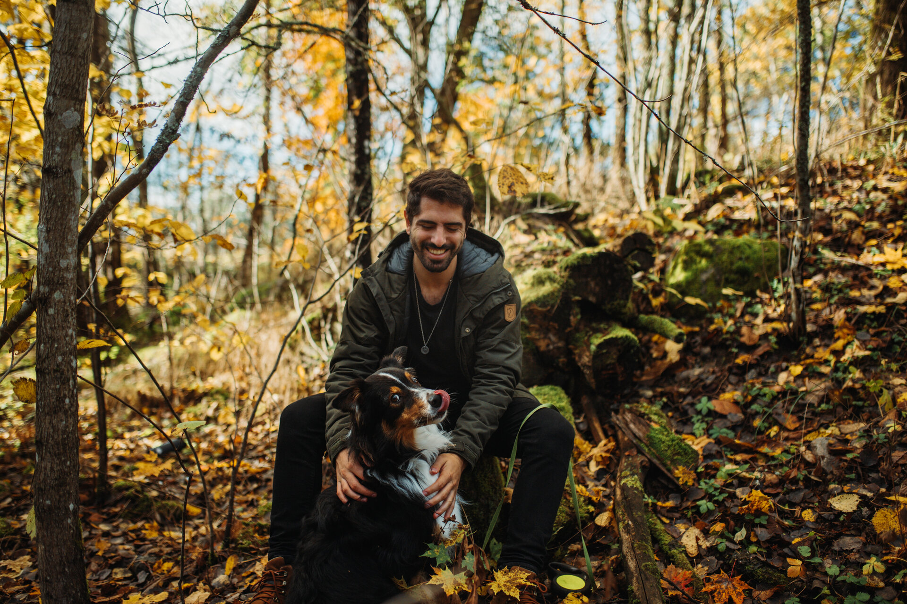

“It’s a dangerous business, Frodo, going out your door. You step onto the road, and if you don’t keep your feet, there’s no knowing where you might be swept off to.”
J.R.R. Tolkien
I was born in Montevideo, Uruguay in April 1994, a small city in one of the smallest countries in South America. I was very energetic as a child with divergent thinking (this was back in a time when there was little research on attention). Later I realized this divergence was not a negative thing, but something I could use to my favor. I would focus this energy on music, books, and arts.
That led me to study literature. I was fascinated by how songs, poems, and books traveled across borders, carrying the weight of history. In an era where news travels fast and the past seems to be easily forgotten, I found in photography a unique way to immortalize a moment—even the most spontaneous, vivid ones.
My passion is the understanding of human interaction and how making brave decisions, such as getting married, can lead to an unexpected new lifeline. I want to tell stories of love and courage.
I am very passionate about nature, coffee, books, and playing piano and guitar. I'm always waiting for the next time I can go into the wild (make a nice fire after long hours of walking), build huge piles of books, and share as much time as I can with my loved ones.
Board games and lo-fi hip-hop music are a constant in my daily life. I consider myself very lucky for loving what I do for a living and being able to meet such beautiful couples along the way.
Traveling and landscape photography are among my most precious activities (someday I dream of selling some landscape photos that someone would love to put in their studio, living room, etc.). Every now and then, if I have the chance to discover new places, I won't hesitate to jump into an adventure. So, if your wedding means crossing countries, LET'S JUMP into it! The most important thing is for you to feel that my work represents you as a couple and suits your style.
As you might have noticed by now, I don't follow a strictly structured way. I believe that every story should be distinguished as special, and that is why you won't find two replicated weddings. My goal is to highlight the uniqueness of every story.
During the big day, I will follow the bride and groom like a ninja. I work barely noticed while capturing the most special moments of your wedding day.
To capture the essence of your love is my motivation. If you notice me with a huge smile, it might be because I've captured one of the golden shots. I call golden shots those pictures that pierce right through our hearts and make us travel to the past, bringing it close.